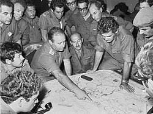
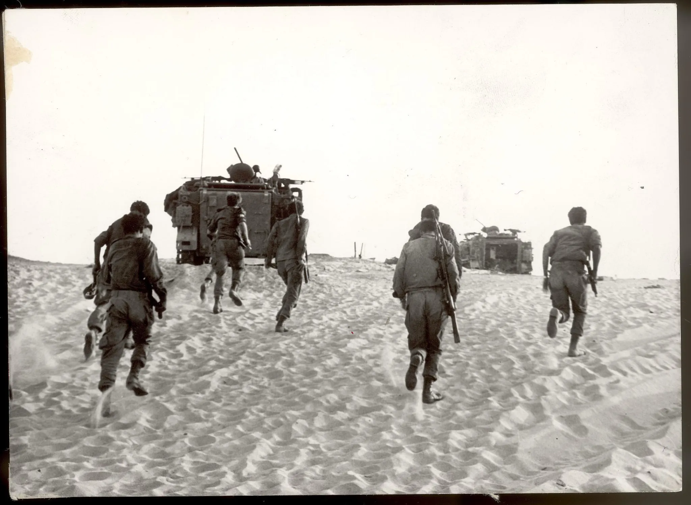
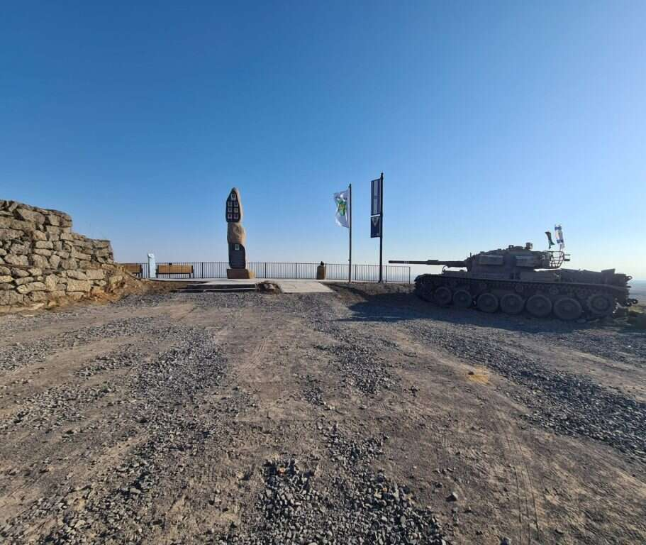

רקע כללי
מלחמת יום הכיפורים פרצה ב-6 באוקטובר 1973, כאשר צבאות מצרים וסוריה תקפו את ישראל במפתיע ביום הקדוש ביותר בלוח השנה היהודי. מטרת התקיפה הייתה להשיב שטחים שאבדו במלחמת ששת הימים בשנת 1967. התקיפה החלה בצפון ברמת הגולן ובדרום לאורך תעלת סואץ, ותפסה את ישראל בהפתעה מוחלטת.
המלחמה נמשכה 19 ימים והייתה אחת הקשות ביותר בתולדות ישראל. היא הובילה לאובדן רב בנפש ולפגיעות כלכליות עמוקות, אך גם הדגישה את כוח העמידה והנחישות של מדינת ישראל ושל צה"ל.
קרבות מרכזיים
חזית הדרום - סיני
בדרום, הצבא המצרי חצה את תעלת סואץ בעזרת גשרים וסירות, כשהוא משתמש בטילים ובתחמושת מתקדמת. הקרבות באזור זה היו בין הקשים במלחמה, וצה"ל הצליח לאחר מאמצים רבים להחזיר לעצמו את השליטה על האזור.
חזית הצפון - רמת הגולן
בצפון, צבא סוריה פתח במתקפה מאסיבית על רמת הגולן, תוך שימוש במאות טנקים וכוחות רגליים. הקרבות ברמת הגולן התאפיינו בגבורה יוצאת דופן מצד חיילי צה"ל, אשר בלמו את ההתקפה הסורית והצליחו לשמור על השליטה באזור.
המורשת והזיכרון
המלחמה השאירה חותם עמוק בזיכרון הלאומי של החברה הישראלית. מדי שנה, ביום הכיפורים, נערכים טקסי זיכרון לכבוד הנופלים במלחמה. כמו כן, הוקמו אנדרטאות רבות ברחבי הארץ כדי להנציח את גבורתם של הלוחמים.
המלחמה גם הובילה לשינויים עמוקים בחברה הישראלית, הן ברמה הצבאית והן ברמה המדינית. היא הדגישה את החשיבות של הכנה מוקדמת ושל איסוף מודיעין מדויק, ולימדה את המדינה שיעורים חשובים על אחדות וחוסן.
